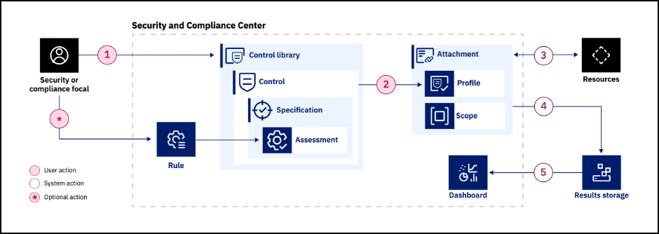

IBM Cloud Security and Compliance Center - Level 3 Demonstration Guide
Welcome to the demonstration guide for the IBM Cloud Security and Compliance Center Level 3 learning plan. In this Level 3 course, you will learn how to demonstrate IBM Cloud Security and Compliance Center (SCC) to clients. Before starting this learning plan, it is highly recommended that you complete the IBM Cloud Security and Compliance Center Foundation learning plan as that base knowledge is assumed for this course. The Level 2 courses can be found here:
- IBMers: https://yourlearning.ibm.com/activity/PLAN-???
- Business Partners: https://learn.ibm.com/course
Every good client demonstration should tell a story the client can relate to. This may be a particular pain point the client is experiencing, or a common industry scenario. SCC includes both industry specific (e.g. Financial Services), cross industry controls, and the ability to build custom controls. When performing an actual client demonstration, sellers should focus on the controls most important to the client.
Key SCC Concepts
Before continuing review the following key concepts associated with SCC. Additional details on these and other SCC-related concepts can be found here.
Control - A technical, administrative, or physical safeguard that is designed to meet a set of defined security and privacy requirements. Controls exist to prevent, detect, or lessen the ability of a threat to exploit a vulnerability.
Specification - A statement that defines the specific security and privacy requirements that a control must meet.
Control Library - A collection of predefined or custom controls. Control libraries show all the controls in an account that are available to be evaluated. A library is helpful for organizing and versioning controls.
Profile - A group of controls that are related to a specific compliance objective. Although very similar in structure to a control library, a profile can be attached to a set of resources and be evaluated.
Assessment - The actual evaluation of a configuration for compliance with applicable standards. An assessment can be either automated or manual depending on the control.
Rule - A set of conditional statements that are used to determine whether a resource configuration is in compliance. To evaluate a rule, it must be associated with a profile through an assessment.
Parameter - The specific configuration property that is evaluated. Each parameter is assigned a value by default that can be customized when an attachment is created. For example, if a control evaluates which region that a resource exits in, you can specify the region that you want to check for by defining the parameter.
Attachment - The connection between a profile and scope that defines the way that SCC conducts an evaluation. An attachment is formed by selecting the grouping of resources to be evaluates and a profile. Then, you specify the parameters that you want to evaluate for. Attachments are evaluated once per day or can be initiated as needed.
These concepts can be visualized in these steps:

- A security or compliance focal specifies the controls to be enabled. This is done by selecting a pre-defined profile (e.g. IBM Cloud Security Best Practices, IBM Cloud for Financial Services, etc.) or creating a custom profile with specific controls. Optionally, the focal could create custom rules.
- Next, the focal creates an attachment of the profile. The attachment defines the scope of resources to be scanned along with any optional, customized parameters for specific controls.
- Once saved, the initial scan of the attachment is performed against the scoped resources. Scan's are typically done on a daily basis, weekly, or monthly basis, but can also be run ad-hoc.
- The results of the scan or stored in a IBM Cloud Object Storage (COS) specified by the client when the SCC instance is created.
- And finally, the results are made accessible through the SCC Dashboard in the IBM Cloud Portal.
In the next sections of this demonstration guide learn how to demonstration SCC to clients using the flow above.